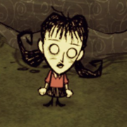
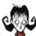

 I bet it'd burn!
This page lists Willow's Quotes which are spoken when the player examines an in-game item or object. The player can alt-click items and objects to examine them.
 Willow (Base Game) Axe- "It's very sharp."
Luxury Axe- "It won't light trees on fire, but at least it's shiny."
Shovel- "Not great for fighting."
Regal Shovel- "It won't make flaming pits, but at least it's shiny."
Pickaxe- "It's very pointy."
Opulent Pickaxe- "It won't light rocks on fire, but at least it's shiny."
Razor- "Why did I build this?"
Razor (can't shave)-
Razor (nothing left)- "There isn't even any stubble left!"
Razor (shaving a waken beefalo)- "I'm not going to try that while he's awake."
Hammer- "I prefer sharp implements."
Pitchfork- "Three times pointiness."
Campfire (upon being built)- "I like fire."
Fire Pit (upon being built)- "I could watch it for hours."
Fire Pit (burned out)- "I should make the fire come back."
Campfire and Fire Pit (high)- "BURN! BURN FASTER!"
Campfire and Fire Pit (normal)- "Burn!"
Campfire and Fire Pit (low)- "This fire is small and boring."
Campfire and Fire Pit (embers)- "I should make the fire come back."
Torch- "Fire is so pretty."
Torch (run out)- "My precious light is gone!"
Willow's Lighter- "It's my lucky lighter!"
Miner Hat- "It's not real fire, but it's still pretty fun."
Miner Hat (run out)- "My precious light is gone!"
Pumpkin Lantern- "Fire on the inside is amazing!"
Lantern- "Fire is not meant to be contained like this!"
Backpack- "It's for me to put my stuff in"
Piggyback- "I made a backpack out of butts!"
Bird Trap- "I'll catch those creepy birds."
Bug Net- "I can catch a bug!"
Fishing Rod- "Fishing for the answer with a line and sinker."
Straw Roll- "Musty."
Fur Roll- "It's too frilly."
Tent- "I got all the badges in Girl Scouts."
Trap- "It's a bit passive aggressive, but it'll have to do."
Honey Poultice- "Eww, do I have to?"
Healing Salve- "It burns! But where's the fire?"
Heat Stone- "A fire would make this even better!"
Heat Stone (cold)- "It's stone cold."
Heat Stone (warm)- "Heat without the flame... what fun is that?"
Heat Stone (hot)- "Look at how it glows!"
Umbrella- "I love the colour!"
Compass- Depends on location
Crock Pot- "It makes me hungry just to look at it."
Crock Pot (cooking, long time left)- "It's going to take a while."
Crock Pot (cooking, short time left)- "It's almost done!"
Crock Pot (finished)- "Mmmmm! It's ready to eat!"
Farm Plot, Speedy Farm Plot and Turbo Farm Plot- "Sigh. It's a pile of dirt."
Farm Plot, Speedy Farm Plot and Turbo Farm Plot (growing)- "Hurry up, dirtpile. Feed me!"
Farm Plot, Speedy Farm Plot and Turbo Farm Plot (needs fertilizer)- "Stupid thing needs poop."
Ice Box- "That is the opposite of fire."
Drying Rack- "I want to hang some meat!"
Drying Rack (drying)- "Come on meat, dry already!"
Drying Rack (finished)- "It's ready!"
Science Machine- "Even I don't know everything, yet."
Alchemy Engine- "Even I don't know everything, yet."
Winterometer- "It would be better if it measured fire."
Rainometer- "Rain is the anti-fire. Boo!"
Lightning Rod- "All the lightning can come here!"
Lightning Rod (charged)- "All glow but no fire."
Gunpowder- "Oooooooooh! Shiny!"
Spear- "Feel my wrath!"
Ham Bat- "Pleased to meat you!"
Boomerang- "It's not the most exciting weapon."
Boomerang (hit self)- "Stupid boomerang!"
Blow Dart- "Good practice for blowing into a fire."
Sleep Dart- "Just don't breathe in."
Fire Dart- "This is my favourite thing in the whole wide world."
Football Helmet- "Sports are hard."
Grass Suit- "A waste of flammable materials."
Log Suit- "Now I can take on the world!"
Marble Suit- "If I have to fight I might as well be protected."
Bee Mine- "Bees inside. Should've put some fire in there for good measure."
Tooth Trap- "It would be better with fire."
Shelmet- "It fits my head."
Snurtle Shell Armor- "Less defense! More offense!"
Bee Box- "Come on fat bees, make me honey!"
Bee Box (with honey)- "Yay! I can steal honey!"
Birdcage- "Bird prison!"
Birdcage (occupied)- "Ha! I have you now!"
Birdcage (occupied, sleeping)- "Stupid bird. Wake up!"
Pig House- "These pigs have questionable taste in architecture."
Pig House (occupied and lit up)- "He's doing pig things in there."
Pig House (occupied and lights off)- "You jerk! Let me in!"
Hay Wall (inventory)- "Hmmm. I wonder if these will burn."
Hay Wall (placed)- "That looks so flammable!"
Wood Wall (inventory)- "I hate hiding."
Wood Wall (placed)- "That could totally catch on fire."
Stone Wall (inventory)- "These are surprisingly heavy."
Stone Wall (placed)- "Eh. I guess that's OK."
Chest- "It's a trunk for my junk."
Chest (full)- "It's full."
Chest (not allowed to store, like backpack)-
Sign- "Less reading! More burning!"
Wooden Flooring- "The ground is boring."
Carpeted Flooring- "The ground is boring."
Cobblestones- "The ground is boring."
Checkerboard Flooring- "The ground is boring."
Turfs- "A chunk of ground."
Fungal Turf- "The ground is boring."
Rope- "Some short lengths of rope."
Boards- "Boards"
Cut Stone- "I've made them seductively smooth."
Papyrus- "I bet it'd burn!"
Purple Gem- "Weird"
Nightmare Fuel- "Eww, it's still warm!"
Meat Effigy- "That is my insurance policy."
Prestihatitator- "I can use the hat like a cauldron!"
Shadow Manipulator- "A dark and powerful energy radiates from it."
Pan Flute- "Music is so boring."
Nightmare Fuel- "Eww, It's still warm!"
Night Light- "It's like fire, but purple!"
Night Armour- "Like being wrapped in smoke."
Dark Sword- "It's like my dreams can hurt real things!"
One-Man Band- "I can do the pyrotechnics, too!"
Bat Bat- "I can hit my enemies with it."
Chilled Amulet- "Boo to this."
Nightmare Amulet- "Has science gone too far?"
Life Giving Amulet- "I feel so safe wearing it."
Fire Staff- "This is my absolute favorite toy."
Ice Staff- "I hate this thing."
Telelocator Staff- "It's quite a rush to use."
Telelocator Focus- "I can feel the magic!"
Sewing Kit- "But destruction is so much more fun!"
Rabbit Earmuff- "Smells like rabbit butt."
Straw Hat- "A hat made of straw. To think, it could've been tinder."
Beefalo Hat- "I've taken his hair and put it on my own!"
Beekeeper Hat- "This should keep me protected."
Feather Hat- "I am a phoenix!"
Winter Hat- "It's not warm enough for my liking."
Top Hat- "A top hat and a lighter, a perfect combination."
Dapper Vest- "Not as nice as a flaming vest, but it'll do."
Breezy Vest- "Now I'll be with my friend forever."
Puffy Vest- "Not as warm as a good fire, but still pretty good!"
Bush Hat- "Too passive!"
Garland- "A halo of flowers. Too bad it's not a burning halo of flowers."
Walking Cane- "I can walk more easily with this!"
Thulecite Medallion (min)- "Looks normal to me."
Thulecite Medallion (rising low)- "It's warning me."
Thulecite Medallion (rising high)- "The fuel is coming to life!"
Thulecite Medallion (max)- "It's almost humming."
Thulecite Medallion (receding high)- "I think it's turning off."
Thulecite Medallion (receding low)- "I guess it's nearly over."
Thulecite- "I don't think it would burn."
Thulecite Wall- "And they'll huff and they'll puff!"
The Lazy Forager- "It picks up my burning materials for me!"
Magiluminescence- "It seems to absorb the darkness around it."
Construction Amulet- "I feel my mind open when I wear this."
The Lazy Explorer- "It gives me a headache."
Star Caller's Staff- "It's magical."
Deconstruction Staff- "It won't start a fire but I guess it's still useful."
Pick/Axe- "It's so useful!"
Thulecite Crown- "It seems like there's something flowing through it."
Thulecite Club- "This will keep the nasties at bay."
Thulecite Suit- "Not sure I want to wear this."
Houndius Shootius-
Houndius Shootius (placed)-
Evergreen- "It looks like it would burn well."
Evergreen (chopped)- "One less tree in the world."
Evergreen (burning)- "YES! BURN!"
Evergreen (burnt)- "I wish it was still burning."
Lumpy Evergreen- "Die in a fire!"
Log- "It's big, it's heavy, and it's wood."
Log (burning)- "That's some hot wood!"
Charcoal- "Mmmm. Smells like fire."
Pinecone- "Hey there, tree seed."
Spiky Tree- "It looks dangerous!"
Spiky Tree (chopped)- "Not so spiky now, are you?"
Spiky Tree (burning)- "YES! BURN!"
Spiky Tree (burnt)- "I wish it was still burning."
Marble Tree- "The worst kind of tree. The non flamable kind."
Totally Normal Tree- "I bet it burns extra nicely!"
Living Log- "It looks upset."
Sapling- "I should pick it."
Sapling (picked)- "Poor little limp tree."
Sapling (burning)- "Burn! Yeah!"
Sapling (picked up)- "What's the matter, got no dirt?"
Twigs- "It's a bunch of small twigs."
Grass Tuft- "It's flammable a tuft of grass."
Grass Tuft (picked)- "Grass stubble is kind of useless."
Grass Tuft (barren)- "It needs poop."
Grass Tuft (burning)- "Fire! Wooo!"
Grass Tuft (picked up)- "What's the matter, got no dirt?"
Cut Grass- "Cut grass, ready for arts and crafts."
Berry Bush- "Mmmmm. Berries."
Berry Bush (picked)- "I want more berries!"
Berry Bush (barren)- "Eat poop, stupid plant!"
Berry Bush (burning)- "Mmmmm. Berries."
Berry Bush (picked up)- "What's the matter, got no dirt?"
Reeds- "It's a burnable clump of reeds."
Reeds (picked)- "I can't do anything with reed stubble."
Reeds (burning)- "Burn! Yeah!"
Cut Reeds- "Cut reeds, ready for burning. Or maybe crafting"
Plant- "I'll eat it if I have to."
Plant (growing)- "Hurry up, you stupid plant!"
Plant (ready to be picked)- "Oh boy. Vegetables."
Marsh Plant- "It's all planty."
Spiky bush- "Ouch! It looks sharp."
Flower- "I don't have time to waste on flowers."
Petals- "Stupid flowers. They're almost useless."
Evil Flower- "Ugh, that smells terrible."
Dark Petals- "Ew, they're sticky."
Red Mushroom (unpicked)- "Pretty."
Red Mushroom (unpicked, sleeping)- "Hey! You! Get up here!"
Red Mushroom (picked, the remains on the ground)- "Maybe it will return someday."
Green Mushroom (unpicked)- "Stupid mushroom."
Green Mushroom (unpicked, sleeping)- "Hey! You! Get up here!"
Green Mushroom (picked, the remains on the ground)- "Maybe it will return someday"
Blue Mushroom (unpicked)- "Dumb mushroom."
Blue Mushroom (unpicked, sleeping)- "Hey! You! Get up here!"
Blue Mushroom (picked, the remains on the ground)- "Maybe it will return someday"
Bee Hive- "It's full of bees!"
Killer Bee Hive- "I had better keep my distance."
Honeycomb- "It's waxy."
Hound Mound- "Uh oh, I don't like the look of that."
Bone- "Oh my. I hope he went out in a blaze of glory."
Touch Stone- "I guess I could touch it?"
Harp Statue- "What a nice statue. Shame if something were to happen to it."
Marble Pillar- "I wonder if the rest burnt down."
Marble- "It's heavy!"
Merm House- "No-one would care if this burned down."
Merm Head- "That's what you get for being so stinky!"
Pig Head- "I guess I have it alright."
Pig Torch- "These pigs sure know how to have a good time."
Basalt Boulder- "It's too hard to break!"
Boulder- "It wouldn't fit in my pocket."
Rocks- "I can make stuff with these."
Flint- "The poor man's fire-starter."
Nitre- "There are tiny explosions trapped inside."
Gold Nugget- "Where am I going to spend this?"
Headstone (1)- "It says milk. Eggs. Bacon."
Headstone (2)- "Here lies some guy. Blah blah blah."
Headstone (3)- "Hey, that's my name!"
Headstone (4)- "This headstone is blank."
Grave- "It's full of dead stuff, I bet."
Grave (dug)- "Better it than me."
Suspicious Dirt Pile- "Who just leaves dirt lying around in the forest?"
Animal Tracks- "It leads to my new friend."
Animal Tracks (found) - "I'll find you!"
Animal Tracks (lost its trail) - "Ohh... he got away."
Wooden Thing- "I like the way the symbols glow."
Wooden Thing (partially assembled)- "I'm making a monstrosity!"
Wooden Thing (fully assembled)- "I just want to see this world burn."
Ring Thing- "This is too precious to burn."
Crank Thing- "What's this part good for?"
Box Thing- "It feels warm."
Metal Potato Thing- "Perhaps I could melt it into a more pleasing shape."
Wormhole (closed)- "Poke it with a stick!"
Wormhole (open)- "I wonder if he likes spicy food?"
Wormhole (exited)- "I'll have to burn these clothes!"
Pond- "I can't see the bottom!"
Skeleton- "Oh my. I hope he went out in a blaze of glory."
Spider Den- "That's just nasty."
Spider Egg- "I hope these don't hatch in my pocket."
Rabbit Hole- "Stupid rabbits. Come out so I can eat you."
Walrus Camp- "Why does everyone have a nicer house than me?"
Walrus Camp (Summer)- "I'm not going in there. Yuck!"
Plugged Sinkhole- "Who plugged that hole?"
Sinkhole- "I hope there's lava down there somewhere."
Rope to Surface- "It's dark and stuffy down here."
Red Mushtree- "Gross. It smells like leprechaun butt"
Green Mushtree- "Gross. It's all mushroomy."
Blue Mushtree- "Gross. This tree is sick all over."
Light Flower- "It's burning inside."
Light Bulb- "Bright!"
Stalagmite- "Rocks are boring."
Stalagmite (pointy)- "More boring rocks."
Spilagmite- "It's full of spiders."
Slurtle Mound- "I should burn them out."
Rabbit Hutch- "Ugh. Stupid rabbits."
Fern- "Looks flammable."
Foliage- "Fuel for the fire."
Cave Banana Tree- "Looks burnable!"
Ancient Statue- "Drat, won't burn."
Broken Ancient Pseudoscience Station- "The dead can't get through here."
Ancient Pseudoscience Station- "Oooo! An afterlife intercom."
Broken Clockworks- "Dead windup horsey."
Relic- "Old furniture."
Cave Lichen- "A crusty plant."
Ornate Chest- "Kind of tacky."
Nightmare Light- "Light without fire is unnatural."
Clockwork Knight- "It's a pony!"
Clockwork Bishop- "It's a bishop!"
Clockwork Castle- "It's a castle!"
Damaged Bishop- "Ahhh!"
Damaged Rook- "It has a nasty smile."
Charlie (the darkness monster)- "I'm not afraid of you!"
Charlie (attacked by)- "OUCH! You jerk!"
Hound- "What a jerk!"
Red Hound- "I actually kind of like this one."
Blue Hound- "Gross! Cold!"
Hound's Tooth- "It's sharp. I like it!"
Spider- "Maybe I could kill it... with FIRE."
Spider (sleeping)- "I could take him."
Spider (dead)- "Ha! I showed you!"
Spider Warrior- "Maybe I could kill it... with FIRE."
Spider Warrior (sleeping)- "Maybe I should just leave that one alone."
Spider Warrior (dead)- "He had it coming."
Spider Gland- "Eeeeew it's slimy and stinky!"
Silk- "Mmmmmm. Smooth."
Krampus- "Stay back, you big jerk!"
Krampus Sack- "I've got a new bag."
Merm- "Eww, it's all swampy."
Tentacle- "That looks dangerous"
Tentacle Spike- "It's pointy and slimy."
Tentacle Spots- "Ewwwww."
Big Tentacle (Tentapillar)- "It's quivering."
Baby Tentacle- "Awwww, they want hugs!"
Guardian Pig- "I like his attitude!"
Werepig- "Bring it on, piggie!"
Ghost- "I can't kill what's already dead."
Mactusk- "Stop following me!"
Weetusk- "He looks tasty."
Walrus Tusk- "Nom nom nom."
Tam o' Shanter- "I kind of like the look of it."
Mosquito- "So annoying!"
Mosquito (picked up)- "Keep that mouth away from me!"
Cave Spider- "What a frustrating jerk!"
Spitter- "Get over here!"
Batilisk- "Cute little guy!"
Snurtle- "Kaboom!"
Slurtle- "I want to blow it up!"
Slurtle Slime- "I love this stuff!"
Broken Shell- "Heh. It broke."
Lureplant- "I bet a quick fire would take care of this."
Fleshy Bulb- "It's mine now."
Eyeplant- "They spread like fire."
Slurper- "Do they have little fires in their bellies?"
Ancient Guardian- "Poor thing. Trapped in this maze."
Dangling Depth Dweller- "They come from above."
Depths Worm (emerged)- "It's so furry!"
Depths Worm (lure)- "Light without fire. Unnatural."
Depths Worm (burrowed)- "Does dirt normally move around?"
Beefalo- "What a disgusting, hairy beast!"
Beefalo (following)- "Er, are you following me?"
Beefalo (sleeping)- "They look even dumber when they're sleeping."
Beefalo (shaved)- "Ha! He's naked now!"
Beefalo Wool- "Ha! I stole his hair!"
Beefalo Horn- "It sounds like a beefalo field in there."
Baby Beefalo- "Even the babies are ugly."
Baby Beefalo (sleeping)- "WAKE UP!"
Nearby Bees-
Bee- "It's fat, but that stinger looks dangerous."
Bee (picked up)- "Pocket full of bees!"
Killer Bee- "I like the cut of that bee's jib."
Killer bee (picked up)- "Buzz!"
Stinger- "It's pokey!"
Pig- "Ugh. They're fragrant."
Pig (following)- "Ick. It's following me."
Pig (dead)- "I wonder how they taste."
Pig Skin- "Ha ha. A pig's butt"
Bunnyman- "Ugh. They look so stupid."
Beardlord-
Bunny Puff- "I won that argument."
Frog- "He's too damp to burn."
Frog (sleeping)- "They're cute when they're sleeping."
Frog (dead)- "I showed him!"
Koalefant- "We will be great friends!"
Winter Koalefant- "He looks warm."
Rock Lobster- "We don't have much in common."
Pengull- "Run away tiny dancers."
Splumonkey- "Joke's on you! I can burn this poo."
Butterfly- "Flutter away, butterfly!"
Butterfly (picked up)- "I want to squish it."
Crow- "I think it's waiting for me to die."
Crow (picked up)- "Not so smart now, are you?"
Jet Feather- "Crow feather. It probably smells terrible on fire."
Redbird- "Does that mean spring is coming?"
Redbird (picked up)- "He likes my pocket."
Crimson Feather- "Redbird feather. It probably smells terrible on fire."
Snowbird- "Life in the frozen wastes."
Snowbird (picked up)- "It's so soft."
Azure Feather- "Snowbird feather. It probably smells terrible on fire."
Gobbler- "Evil bird! Get away from my yummy berries!"
Eye Bone- "It's rude to stare."
Eye Bone (Chester dead, eye closed)- "At least it's not looking at me anymore."
Ashes of Eye Bone-
Chester- "He's so fuzzy!"
Rabbit- "He looks tasty."
Rabbit (picked up)- "I have him where I want him."
Beardling-
Beardling (picked up)-
Fireflies- "I wish they didn't run away!"
Fireflies (picked up)- "They're like little fires in my pocket!"
Mandrake- "That's not a normal plant"
Mandrake (following)- "Now that's just creepy!"
Mandrake (dead)- "Why did this plant have a face?"
Mandrake (cooked)- "The fire didn't get rid of its face. Gives me the willies."
Mandrake (knocked out by)- "Argh, my little head!"
Tallbird- "I don't think it wants to be friends."
Tallbird Nest (empty)- "The nest is empty."
Tallbird Nest (with egg)- "That egg could use some fire!"
Tallbird Egg- "Does it like fire?"
Tallbird Egg (cooked)- "Fire makes them so much better."
Hatching Tallbird Egg- "Arise my phoenix!"
Hatching Tallbird Egg (dead, eating the egg)- "Ugh. Crunchy."
Hatching Tallbird Egg (too hot)- "Is there such a thing as too much fire?"
Hatching Tallbird Egg (too cold)- "Needs more fire!"
Hatching Tallbird Egg (long time left)- "How long is this going to take?"
Hatching Tallbird Egg (short time left)- "I'm getting tired of waiting."
Smallbird- "Not quite a phoenix, but still cute, I guess."
Smallbird (hungry)- "Are you hungry?"
Smallbird (starving)- "Ok, ok! I get it, you're hungry."
Smallish Tallbird- "I feel like he understands me."
Smallish Tallbird (hungry)- "He sure eats a lot."
Smallish Tallbird (starving, attacking)- "Don't look at me! Get your own food."
Pecked by a Smallish Tallbird- "No! Bad birdy!"
Treeguard (Leif)- "He looks flammable!"
Spider Queen- "Kill it with fire!"
Spider Hat- "Who's your mommy!"
Deerclops- "Holy crap!"
Deerclops Eyeball- "Stop staring at me!",
Ancient Guardian- "Poor thing. Trapped in this maze."
Guardian's Horn- "I wonder if these rings are an indication of age."
Maxwell- "He's so condescending."
Pig King- "Blech. What a slob."
Wes (trapped)- "Maxwell's statues are trapping him."
Abigail- "Awww, she has a cute little bow."
Bird Egg- "It smells like a bird's butt."
Bird Egg (cooked)- "Yuck. The yellow part is all runny."
Monster Meat- "Gross. It's full of hairs."
Cooked Monster Meat- "It's still gross."
Monster Jerky- "It's dry and smells strange."
Meat- "I could make this better with fire."
Cooked Meat- "I've tasted better."
Leafy Meat- "Eww, it's all slimy."
Cooked Leafy Meat- "Fire makes everything better."
Jerky- "Chewy, but satisfying."
Drumstick- "Bang on the drum all day!"
Fried Drumstick- "Do I satisfy my hunger or do I bang on the drum?"
Fish- "Slippery fishy!"
Cooked Fish- "Less slippery now that it's found fire."
Morsel- "I could make this better with FIRE!"
Cooked Morsel- "I'll need more than appetizers if I'm going to survive."
Small Jerky- "Chewy, but satisfying."
Koalefant Trunk- "Well, part of him is still cuddly."
Winter Koalefant Trunk- "It's so soft and squishy!"
Koalefant Trunk Steak- "I'm still not sure I want to eat this."
Frog Legs- "It still twitches every now and then. Freaky."
Cooked Frog Legs- "The fire made it stop twitching. Fire is the best."
Batilisk Wing- "Yuck!"
Cooked Batilisk Wing- "Yuck!"
Pomegranate- "Is it supposed to have this many parts?"
Sliced Pomegranate- "Fire always makes things better."
Durian- "Ew, stinky!"
Extra Smelly Durian- "Yuck, it smells just as bad cooked!"
Dragon Fruit- "It looks sort of like a fire!"
Prepared Dragon Fruit- "It looks more like a fruit that's been in a fire now."
Berries- "Red berries taste the best."
Roasted Berries- "Red berries with fire somehow taste even better."
Cave Banana- "Bananas!"
Cooked Banana- "Yum!"
Corn- "High in fructose!"
Popcorn- "High in fructose!"
Carrot (in the ground)- "Maybe its special carrot friend is in the ground."
Carrot (picked up)- "Yuck. It's all vegetabley."
Roasted Carrot- "Still vegetabley, but better for having been in fire."
Pumpkin- "I wonder what will happen if I apply fire.",
Hot Pumpkin- "Fire on the outside turned out pretty well."
Eggplant- "Definitely not a bird."
Braised Eggplant- "Using fire on it made it a tastier eggplant."
Red Cap- "I like the colour."
Cooked Red Cap- "I changed it with fire!"
Green Cap- "Boring!"
Cooked Green Cap- "I changed it with fire!"
Blue Cap- "It smells like a gym sock!"
Cooked Blue Cap- "I changed it with fire!"
Glow Berry- "Light without fire. Unnatural."
Bacon and Eggs- "The yellow mucousy part is gross but the bacon is great!"
Butter Muffin- "Heehee, look at that butterfly stuck in the muffin."
Dragonpie- "Fire fruit in a pie? Oh boy!"
Fish Sticks- "What you see is what you get. Sticks of fish."
Fish Tacos- "Convenient taco-grip."
Fist Full of Jam- "Wham, bam, jam! Thank you, ma'am."
Fruit Medley- "Yum, fruit!"
Froggle Bunwich- "Maybe I won't notice that it's frog legs in the sandwich."
Honey Ham- "Fire, ham and honey go well together."
Honey Nuggets- "Honey-covered morsels that have met my friend, fire."
Kabobs- "Meat and fire, now with a stick!"
Mandrake Soup- "The fire didn't get rid of its face. Gives me the willies."
Meatball- "Meat made into spheres and improved with fire."
Meaty Stew- "Just add fire to food and voila!"
Monster Lasagna- "Noodles, meat and clumps of hair. Nasty."
Pierogi- "Tasty things sealed with fire."
Powdercake- "I wonder if it is flammable."
Pumpkin Cookies- "Cookies!!!"
Ratatouille- "Vegetables. So many vegetables."
Stuffed Eggplant- "It's still not a bird, but I stuffed it like one!"
Taffy- "Sugary things burn great, but I should eat this instead."
Turkey Dinner- "A feast of burned bird!"
Unagi- "I cooked that."
Waffles- "Hi, waffles!"
Wet Goop- "How did it go wrong?! I put it in fire and everything."
Seeds- "Farming is boring."
Carrot Seeds- "Seeds for a yucky orange vegetable."
Dragon Fruit Seeds- "Seeds for that fire-looking fruit."
Durian Seeds- "Smelly seeds for a smelly fruit."
Eggplant Seeds- "Will these seeds make a plant or baby bird?"
Pumpkin Seeds- "Seeds for the best vegetable-friend of fire: pumpkin."
Roasted Seeds- "I cooked all the life out of 'em"
Honey- "Sweet and delicious!"
Butterfly Wings- "No more flying for that butterfly!"
Butter- "Tasty, and just a little bit insecty."
Rot- "At least it's still flammable."
Rotten Egg- "Ew! Why? Oh Why?!"
Blueprint- "This will save some experimentation."
Gears- "These must make them move."
Ash- "Leftovers from a fire. I wish it was still here."
Red Gem- "So pretty!"
Blue Gem- "Ugh. This one is ugly."
Yellow Gem- "It sparkles."
Green Gem- "This one feels really light."
Orange Gem- "This one makes my fingers tingle."
Beard Hair- "Uh, where did this come from?"
Manure- "Ew. Nasty. But useful."
Guano- "It burns like normal poop."
Ball and Cup- "Fire is more fun."
Dessicated Tentacle- "All dried up, as if it stayed a bit too close to the fire."
Fake Kazoo- "A cheap fake. It probably doesn't even burn properly."
Frazzled Wires- "Not even a spark."
Gord's Knot- "The knot is stuck. Who needs a knife when you've got fire?"
Gnome- "Ooh, I wonder if he has a flamethrower!"
Hardened Rubber Bung- "I've never liked bathing with water."
Lying Robot- "He whispers beautiful lies to me."
Melty Marbles- "I'll bet the fire that melted these was fiercely hot."
Mismatched Buttons- "You can strike a match on a zipper, but not on buttons."
Second-rate Dentures- "I don't think dentures don't burn well."
Tiny Rocketship- "Check out those tiny thrusters. Such explosive power!"
Failed- "You win THIS time, Maxwell."
Sanity Obelisk (sane, up)- "I wonder what these markings mean."
Sanity Obelisk (insane, down)- "Where'd it go?"
Insanity Obelisk (insane, up)- "Am I seeing things?"
Insanity Obelisk (sane, down)- "Doesn't look flammable. How boring."
Divining Rod holder- "I'll make something out of it."
Divining Rod- "It's full of electrical junk."
Divining Rod (cold)- "It's making some kind of noise."
Divining Rod (warm)- "This thing is getting noisier."
Divining Rod (warmer)- "I must be close!"
Divining Rod (hot)- "Gah! Enough with the beeping!"
Divining Rod Base- "Not sure what this does. Doesn't seem like it's fiery things."
Divining Rod Base (ready to unlock)- "Just needs to be unlocked with a key. Not fire, unfortunately."
Divining Rod Base (unlocked)- "It's whirring now!"
Maxwell's Door- "Maybe that leads home."
Maxwell's Phonograph- "I like more exciting music."
Maxwell's Light- "These are no fun. They light themselves."
Maxwell Statue-
Maxwell's Toothtrap- "What kind of jerk leaves this lying around?"
Maxwell's Toothrap (went off)-
Beemine (Maxwell's)-
Sick Wormhole-
Nightmare Lock-
Nightmare Throne- "Looks sticky."
Male character on Nightmare Throne-
Female character on Nightmare Throne-
Other character on Nightmare Throne-
Generic- "It's a... thing."
Freedom- "I'm free! Time for fires!"
Freezing- "The cold! It burns!"
Lighting a fire (1)- "Tee hee!"
Lighting a fire (2)- "Pretty!"
Lighting a fire (3)- "Oops!"
Lighting a fire (4)- "I made a fire!"
Lighting a fire (5)- "Burn!"
Battlecry- "It's you or me!"
Battlecry (on prey)- "Get over here!"
Battlecry (Pig)- "Stupid pig!"
Battlecry (Spider)- "Grrrrar!"
Battlecry (Warrior Spider)- "Ew, kill iiiit!"
Activated a Bee Mine- "Aaaah! Pokey bugs!"
Leaving combat- "That's what I thought!"
Leaving combat (prey)- "I'll get you next time!"
Leaving combat (Pig)- "Get over here, pork chop!"
Leaving combat (Spider)- "Bleh. I'll kill him later."
Leaving combat (Warrior Spider)- "Not so tough now!"
Dusk- "Night is coming. I need fire!"
Entering light- "I can see again!"
Entering darkness- "It's so dark!"
Doing things in the dark- "I need more light!"
Failed to do something-
Failed to craft something-
Trying to sleep during the day-
Try to sleep during during day in a cave- "Too spooky down here to sleep."
Trying to sleep when too hungry-
Trying to sleep near monsters-
Hounds are coming- "Show yourself!"
Deerclops is coming- "That sounded big!"
Inventory full- "I can't carry anymore stuff!"
Eating- "Yum!"
Eating (spoiled food)- "That tasted terrible!"
Eating (stale food)- "That was kinda gross."
Eating (painful food)- "Ugh! Nasty!"
Hungry- "I need food!"
Earthquake- "That doesn't sound good."
Willow (Reign of Giants) Tools Lights Endothermic Fire and Fire Pit- "I could watch it for hours."
Endothermic Fire and Fire Pit (high)- "BURN! BURN FASTER!"
Endothermic Fire and Fire Pit (medium)- "Burn!"
Endothermic Fire and Fire Pit (low)- "This fire is small and boring. And blue."
Endothermic Fire and Fire Pit (embers)- "Uh-oh. It's almost gone!"
Endothermic Fire Pit (out)- "I should make the fire come back."
Survival Pretty Parasol- "Pretty as can be!"
Thermal Stone- "A fire would liven this thing up!"
Thermal Stone (frozen)- "Frozen solid."
Thermal Stone (cold)- "Stone cold."
Thermal Stone (warm)- "No flame, no real heat... what fun is that?"
Thermal Stone (hot)- "Look at how it glows!"
Food Drying Rack (burnt)- "Maybe the fire wasn't the best drying method..."
Basic Farm and Improved Farm (burnt)- "It was a nice finale."
Crock Pot (burnt)- "At least it went out in a blaze of glory."
Science Science Machine (burnt)-
Alchemy Engine (burnt)-
Winterometer (burnt)-
Rainometer (burnt)-
Fight Structures Ice Flingomatic (turned off)- "And stay off!"
Ice Flingomatic (turned on)- "I wish you'd shut your lid and stop putting out fires."
Ice Flingomatic (low fuel)-
Siesta Lean-to- "They taught us how to make these in Girl Scouts."
Siesta Lean-to (can't sleep)-
Siesta Lean-to (hungry)-
Siesta Lean-to (in cave)-
Siesta Lean-to (burnt)-
Chest (burnt)- "The trunk burned nicely."
Pig House (burnt)- "Nice decorating job."
Rabbit House (burnt)-
Bee Box (burnt)- "Smoked you out!"
Sign (burnt)- "Hahaha, yesss!"
Scientist Machine (burnt)- "There's no learning from that now."
Alchemy Engine (burnt)- "There's no learning from that now."
Turfs Refine Bone shards- "I don't think they make good tinder."
Electrical Doodad- "Electrical doo-dah, doo-dah."
Magic Prestihatitator (burnt)-
Shadow Manipulator (burnt)-
Meat Effigy (burnt)-
Dress Cat Cap- "Cuddly hat."
Fashion Melon- "Well, that's one use for this fruit."
Ice Cube- "It's a real damper on my mood."
Rain Coat- "This'll do the trick."
Rain Hat- "Anything that'll keep the water away."
Nature - Plants Berry Bush (withered)- "All dried out. Primed for fire!"
Sapling (withered)- "It's so dry, it looks like it wants to be on fire."
Grass (withered)- "Nice and dry, ready to burn!"
Birchnut tree- "It looks like it would burn well."
Birchnut- "Hey there, tree seed."
Birchnut (planted)- "You'll be a real tree soon."
Birchnut (cooked)- "Looks like you won't become a tree after all"
Cactus-
Cactus (picked)-
Cactus (cooked)-
Tumbleweed-
Crop (withered)- "It's crackling and dry. Good kindling!"
Grass (withered)-
Nature - Objects Ice- "Chilly."
Mini-glacier- "I don't think there's any way it'd burn."
Mini-glacier (melted)-
Volt Goat Horn-
Raised Dirt- "Hiding from the light, huh?"
Burrow- "Down away from the sun. It's unnatural."
Animal Tracks (spring, lost trail)-
Molehill-
Collapsed Rabbit Hole- "Stupid rabbits must be stuck down there."
Pig Head (burnt)- "It can always get worse, I guess."
Merm Head (burnt)-
Catcoon Den-
Catcoon Den (empty)-
Glommer Statue-
Glommer Statue (mined)-
Mobs - Monsters Warg- "You're a big mean jerk!"
Birchnut Treeguard-
Birchnut Drake-
Mobs - Neutral Animals Buzzard-
Catcoon- "Here, kitty!"
Glommer- "It's fuzzy! And slimy..."
Glommer Gland-
Glommer Wings- "They're so small!"
Glommer Goop- "It's goopy and weird."
Volt goat- "Bouncy goat."
Volt goat (charged)-
Mobs - Passive Animals Moleworm- "Coming up for a peek!"
Mobs - Bosses Deerclops- "Holy crap!"
Bearger- "Whoa! Niiiice Bear..."
Goose- "What in the world..."
Dragonfly- "It's filled with fire!"
Eyebrella- "If I wear it, I don't have to look at it..."
Down Thermantidote- "I donno... it could put out some fires...."
Scalemail- "Yay! More FIRE!"
HIbearnation Vest- "It's like swimming in fur."
Goose Nest-
Mosling-
Lava Spit (hot)- "The coolest drool!"
Lava Spit (cool)- "Cool drool, literally."
Mobs - Other Food - Meats Food - Fruits Watermelon- "I once knew a melon named Walter."
Watermelon (cooked)-
Food - Vegetables Food - Crock Pot Ice Cream- "Well, soooometimes cold things are okay."
Food - Other Misc Items Webber's Skull-
Bucket-o-poop-
Old Bell-
Announcements Lightning miss- "I'm safe from the sky-fire."
Overheating- "The heat is too intense!"
Tree Shelter- "You're good for something besides burning after all."
Wetness (low)-
Wetness (medium)- "This could be bad!"
Wetness (high)- "I hate it!"
Dropping tool while wet-
Smoldering item- "Hooray, it's about to light on fire!"
Burnt- "Yikes! That was hot!"
{kind=link}
{kind=link}